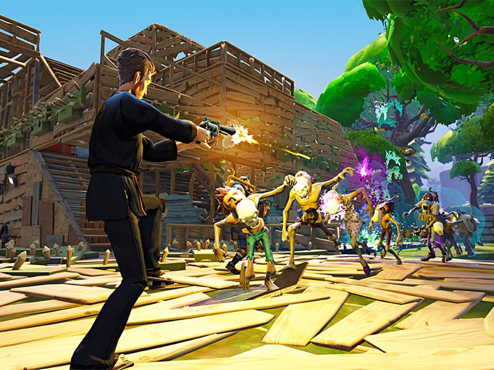

Fortnite — компьютерная онлайн-игра, разработанная американской компанией Epic Games совместно с People Can Fly и выпущенная в ранний доступ в 2017 году[7]. Fortnite предлагает игрокам на выбор три раздельных режима: Fortnite: Save the World (англ.)рус., кооперативный симулятор выживания с открытым миром, в котором игрокам предлагается сообща отбиваться от монстров, похожих на зомби, с помощью оружия и различных построек; Fortnite: Battle Royale — соревновательный режим в жанре королевской битвы, в котором 100 игроков должны сражаться друг с другом, пока в живых не останется только один; и добавленный в 2018 году режим Fortnite: Creative, режим-«песочница», в котором игроки могут самостоятельно создавать различные сооружения, наподобие Minecraft. Fortnite: Save the World был выпущен на платформах Windows, macOS, PlayStation 4 и Xbox One, а Fortnite: Battle Royale и Fortnite: Creative, помимо перечисленных платформ, также и на портативных устройствах — Nintendo Switch, iOS и Android. Игра распространяется преимущественно посредством цифровой дистрибуции по модели free-to-play; изданием версий игры на физических носителях занимается компания Gearbox Publishing.
Создатель Fortnite:Epic Games, People Can Fly
Год выхода: 2017 г.